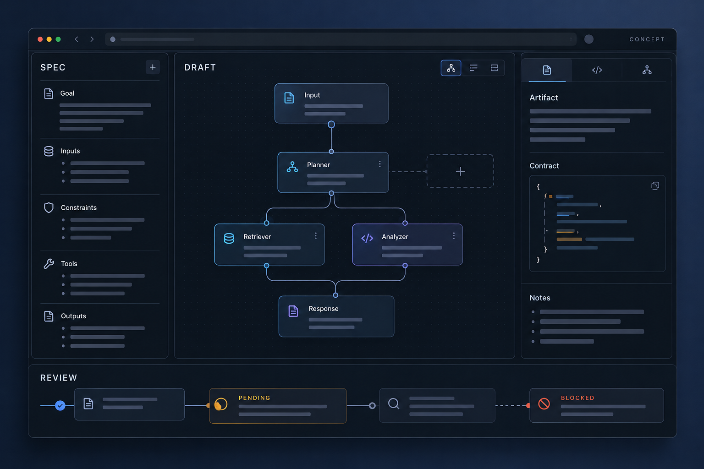

02
智能体构建与验证流程
探索从任务规划、草稿生成到验证门槛的智能体构建流程，让实现状态与验证证据可以被清楚追踪。

- YEAR / 时间
- 2026
- ROLE / 我的职责
- 项目发起、需求与流程设计、AI 辅助开发协作、测试结果核查与迭代决策。
- TOOLS / 工具与技术
- Python · Docker · Git / GitHub · Codex · unittest · Ruff · Mypy · JSON 契约
- CONTEXT / 项目类型
- 个人工程实践 / 智能体系统研究 / 持续开发中
The brief.
背景与目标
我希望理解智能体从任务描述到执行结果之间的工程过程，尤其关注工具调用、执行边界与失败处理。项目围绕可审查的构建流程展开，将需求、输入输出约定、执行条件和验证证据组织起来。
目标是形成能够逐步扩展的工程原型：每项能力具有明确边界，每次修改保留可复查的测试记录，执行与迭代依据清晰的条件推进。
The process.
01 / DISCOVER
观察与梳理
梳理任务输入、执行配方、权限校验与结果输出之间的关系，明确哪些内容可以由模型提出，哪些动作需要经过固定规则与人工确认，并把失败处理纳入流程设计。
02 / MAKE
制作与尝试
与 Codex 协作推进 Python 原型，采用结构化 JSON 契约描述请求和结果，使用 Docker 探索固定任务的隔离执行，并建立配套的回归测试与负向测试。
03 / REFINE
反馈与改进
核对测试回执与失败原因，使用 unittest 检查行为，结合 Ruff 与 Mypy 检查代码规范和类型问题，持续修订错误传播、执行约束与审查材料，并通过 Git / GitHub 管理版本与变更。


The outcome.
最终成果
已形成隔离执行原型、结构化结果与拒绝原因约定，以及配套测试和工程审查记录；固定数学任务已有真实 Docker 执行记录。项目仍在持续开发，后续将继续完善契约一致性、独立验证与可复现流程。

What I learned.
复盘与下一步
这个项目让我理解了如何把一个智能体想法拆解为明确的输入输出、执行条件与验证步骤。在与 Codex 协作的过程中，我逐渐学会阅读测试回执、追踪失败原因，并区分行为测试、代码规范检查与类型检查各自解决的问题。
目前，契约一致性、失败处理与独立复现仍需持续完善。下一步，我计划优先整理关键失败案例、补充可复现说明，并依据验证结果逐步扩展原型能力。